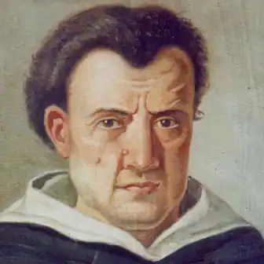

(05.09.1568 — 21.05.1639)
У своїй філософії Кампанелла намагався дати наукове доказ християнства виходячи з чуттєвого сприйняття і пізнання розумом самого себе. Всесвіт є суміш буття з небуттям; зміна породжується протилежними принципами любові і розбрату. Всі речі мають душею і почуттями — кожна на своєму рівні; все прагне до самозбереження; однак розумні істоти можуть досягти цього, лише з'єднавшись з Богом.
Народився в Стіло (в Калабрії, Італія) 5 вересня 1568. У 15 років став ченцем-домініканцем, в школах ордену вивчав праці Аристотеля, Фоми Аквінського, астрологію і каббалу. Прочитавши роботу Телезио Про природу речей згідно з її власним тенденціям (De rerum natura iuxta propria початок, 1565), виступив проти аристотелівської філософії та захист Телезио з книгою Філософія, доведена за допомогою почуттів (Philosophia sensibus demonstrata, 1591). Був заарештований за звинуваченням у єресі, але незабаром випущений; потім знову заарештований у 1593, але виправданий у 1596. У цей час написав праці: Про християнської монархії (De monarchia Christianorum, 1593); Політичний діалог проти лютеран, кальвіністів і інших єретиків (Dialogo politico contra Luterani, Calvinisti e altri eretici, 1595). Заарештований знов у 1599 за звинуваченням у змові проти іспанського режиму в Неаполі, був засуджений у 1602 до довічного ув'язнення (провів у в'язницях майже 27 років), під час якого і написав головні філософські праці, зокрема Захист Галілея (Apologia pro Galileo, 1622), Про відчуття речей і магії (De sensu rerum et magia, 1620), Переможений атеїзм (Atheismus triumphatus, 1631) і безліч інших, а також поеми, мадригали, сонети і другиепоэтические твори, представлені в Обраному (Scelta, 1622). Кампанелла був звільнений у 1626, а в 1629 виправданий. Намагався донести свої ідеї до папського двору. В 1634, злякавшись нового засудження у зв'язку з нововиявленими змовою в Неаполі, втік у Париж під заступництво Людовика XIII і кардинала Рішельє. Помер Кампанелла в Парижі 21 травня 1639. У своїй філософії Кампанелла намагався дати наукове доказ християнства виходячи з чуттєвого сприйняття і пізнання розумом самого себе. Всесвіт є суміш буття з небуттям; зміна породжується протилежними принципами любові і розбрату.Всі речі мають душею і почуттями — кожна на своєму рівні; все прагне до самозбереження; однак розумні істоти можуть досягти цього, лише з'єднавшись з Богом. Політична філософія Кампанелли в його Місті Сонця (La citta del Sole, 1602) містить проповідь комуністичного, контрольованого за допомогою принципів євгеніки, суспільства, яким правлять король-жрець і три державних міністра. Ця утопічна картина відображає мрію Кампанелли про звернення всього людства в католицизм і встановлення світового держави авторитарного типу під егідою папської влади (‘монархія Месії").